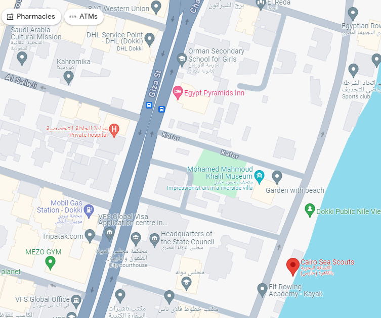

Have questions or want to get involved? Reach out to us!
Cairo Sea Scouts Headquarters
119 El Nile St, Dokki Cairo, Cairo Governorate, Egypt 1234
Cairo, Egypt
Email: cairos@egyptscouts.org
Phone: 02 37491414
Site: cairoseascout.org
Ready to embark on a sea adventure with us? Become a member of Cairo Sea Scouts and start your journey today! Fill out our membership application.